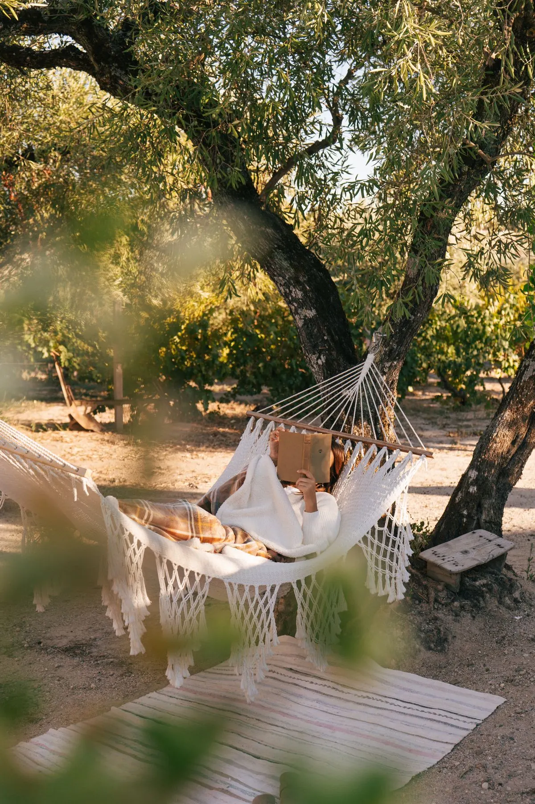
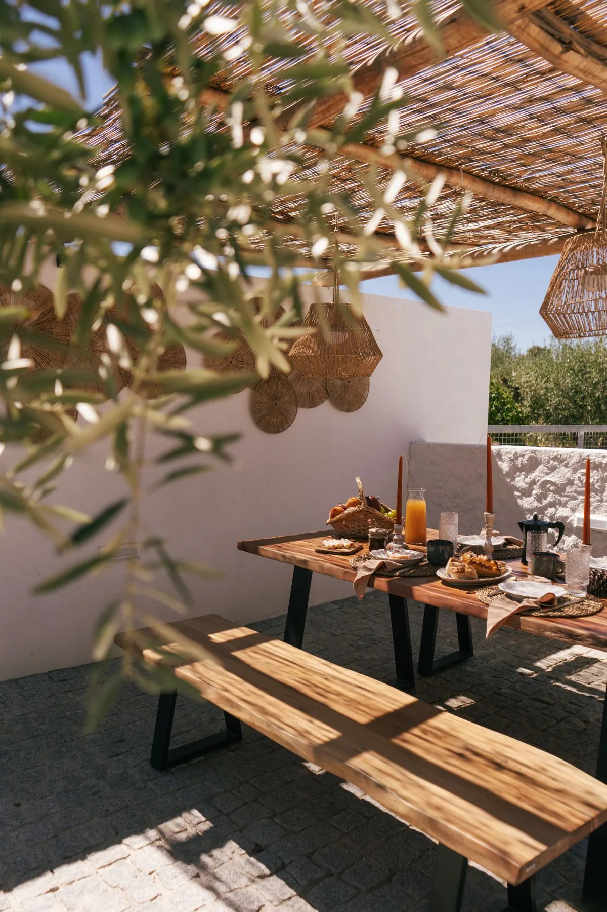
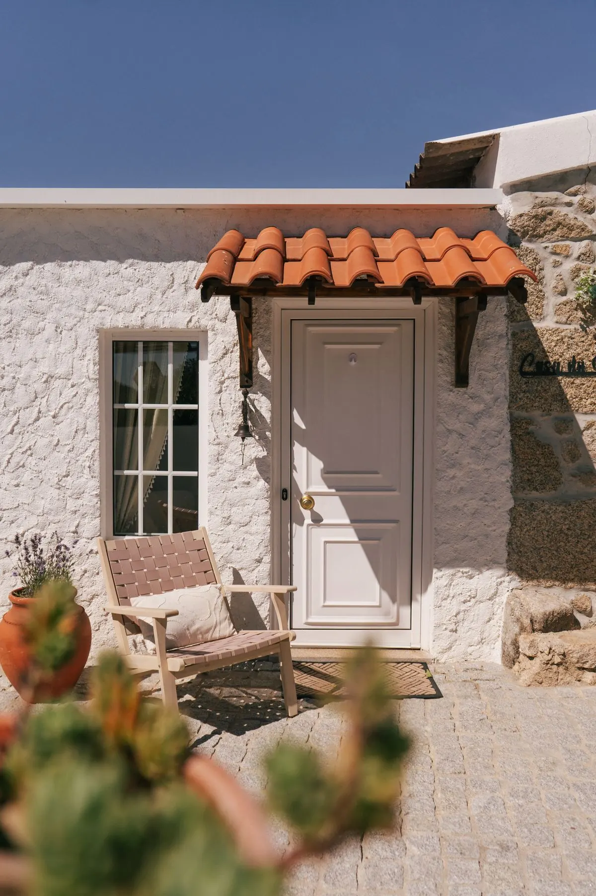
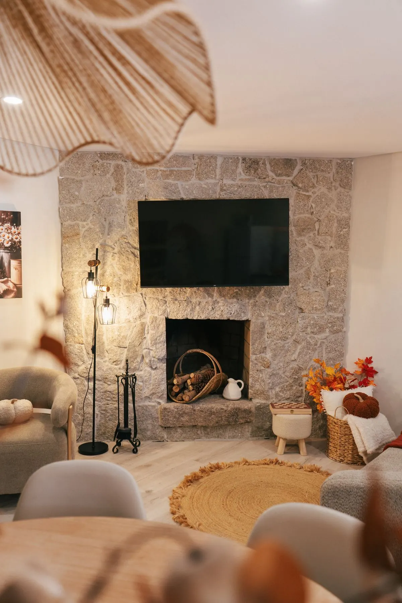
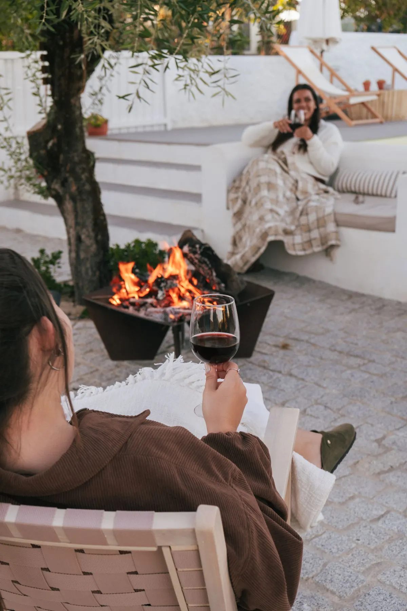

Tardes à sombra
Uma rede entre as oliveiras, um livro e mais nada para fazer.




Atalaia do Campo · Fundão
Sinta-se em casa, no sossego do campo.
Bem-vindo
Na Casa da Tapada, os dias começam com o canto dos pássaros e terminam debaixo de um céu cheio de estrelas. Uma casa de campo cuidada ao pormenor, rodeada de oliveiras e árvores de fruto, pensada para casais, famílias e amigos que querem trocar a pressa da cidade por tempo de qualidade.
Aqui pode ler à sombra, mergulhar na piscina, acender a lareira e simplesmente estar. Nós tratamos do resto.
Conhecer a nossa história

A casa
Momentos

Uma rede entre as oliveiras, um livro e mais nada para fazer.

Noites calmas à volta da lareira exterior, com um copo de vinho da região.

Pequenos-almoços demorados e jantares longos à mesa, lá fora.
Na época certa, cerejas e pêssegos colhidos diretamente da árvore.
"Como disse a minha esposa, a palavra que descreve a casa na perfeição é 'casa', porque nos sentimos na verdade em casa!"
Ruben Adegas
"Casa muito bonita e tranquila, decorada com muito bom gosto! Sentimo-nos como em casa. As camas são de muito boa qualidade, tal como a roupa de cama e de banho! A Carla é muito simpática, prestável e, sobretudo, muito rápida a responder. Recomendo vivamente a CASA DA TAPADA, voltaremos com certeza."
Celine Chorrier-Collet
"Aqui o tempo passa devagar. Acordar de manhã com o som dos passarinhos é mágico. À noite, contemplar o céu estrelado é lindo. A Casa da Tapada é CASA."
Sílvia Alves
"Esta casinha tem tudo o que podíamos desejar para criar memórias em família. Muito acolhedora e cheia de detalhes que fazem toda a diferença!"
Alexandra Oliveira
"Casa extremamente acolhedora, cuidada ao detalhe e impecavelmente limpa. O espaço exterior é simplesmente um sonho!"
Tânia Pinto
"Fim de semana que soube a umas grandes férias. A casa é linda, acolhedora, com tudo o que precisamos."
Adriana Almeida
"Um destino para criar recordações inesquecíveis a dois ou em família, e nem os pets ficam de fora!"
Laura Ribeiro
"Só o sossego e a tranquilidade deram para descansar da azáfama da cidade. Iremos voltar, e já estamos com saudades."
Monica Emiliano
"Um lugar mágico. Tudo é perfeito, até o menor detalhe. Saímos com um nó na garganta porque foi maravilhoso."
Sabrina Capdeville
Algumas avaliações foram traduzidas da língua original.

Reserve diretamente
Ao reservar diretamente, fica a ganhar: não há intermediários nem comissões de plataformas, e fala com a família que cuida da casa.
Prefere reservar pelo Airbnb? Também estamos lá.
Reservar no Airbnb ↗A região
A Casa da Tapada é o ponto de partida ideal para conhecer a natureza, as aldeias e as tradições da região.
Meteorologia
Previsão para os próximos dias, para planear a sua estadia.
Localização
Tapada, 6230-130 Atalaia do Campo
Fundão, Portugal
Abra o caminho no seu telemóvel e venha sem preocupações. O estacionamento é junto à casa.
Dúvidas
Escolha as datas no calendário da página Reservar e envie-nos o pedido por WhatsApp ou email. Confirmamos a disponibilidade e o valor, e a reserva fica garantida com o pagamento de 50%.
Sim. A casa também está no Airbnb, onde a reserva e o pagamento seguem as condições da plataforma. Ao reservar diretamente connosco fica a ganhar, porque não há intermediários nem comissões.
Até 6 pessoas: dois quartos com cama de casal e um sofá-cama na sala.
Sim, os animais são bem-vindos mediante acordo prévio.
Check-in a partir das 15h00 e check-out até às 11h00. Outros horários podem ser combinados, conforme a disponibilidade.
A piscina é privada e exclusiva dos hóspedes. A água não é aquecida, por isso a utilização depende do tempo e da vontade de cada um: não há uma época fixa.
Sim. Há Wi-Fi na casa e estacionamento exterior junto à casa.
Sim, crianças e bebés são bem-vindos. Temos cadeira de refeição para bebé, mas não temos berço. A piscina não tem vedação, por isso as crianças devem estar sempre acompanhadas por um adulto.
Não é permitido fumar dentro de casa. No exterior pode fumar à vontade.